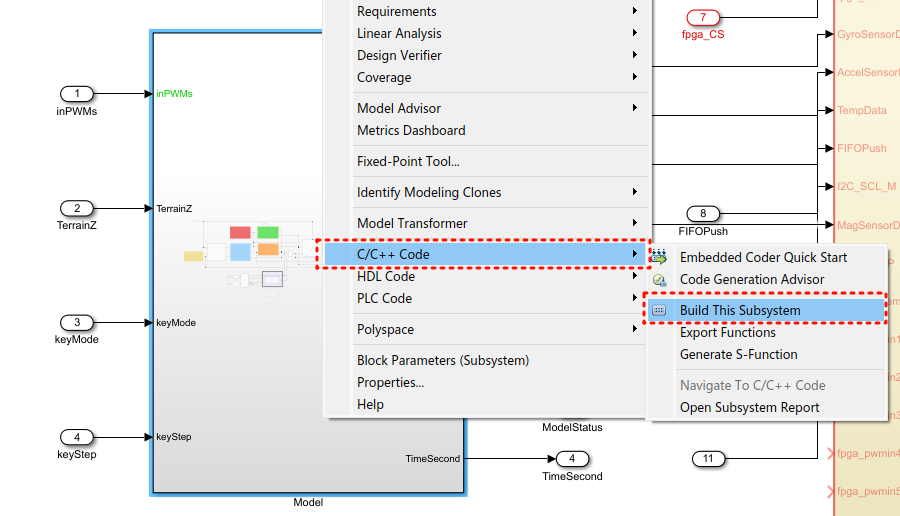
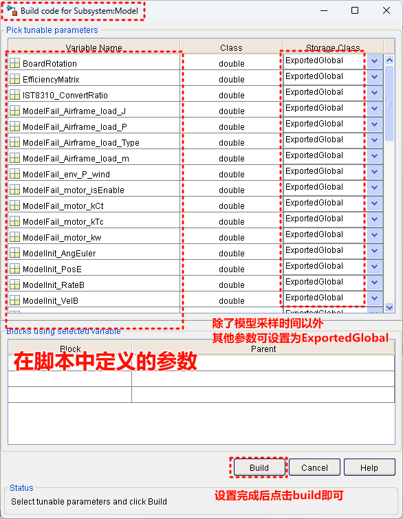
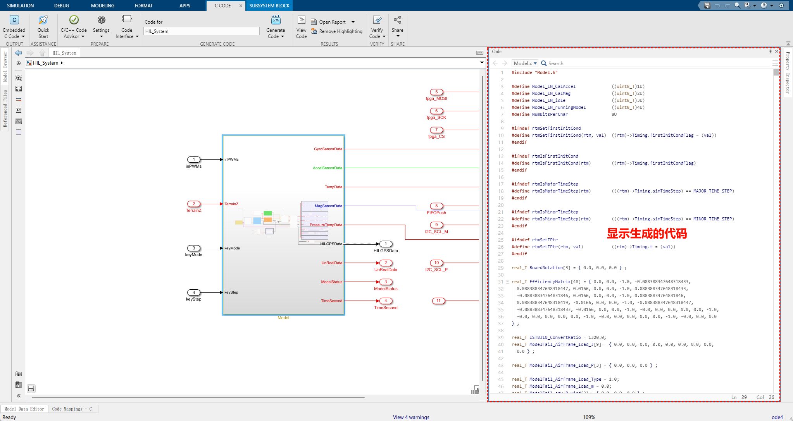
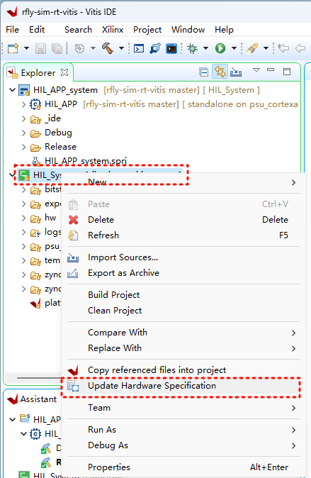
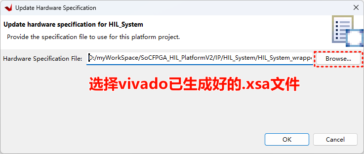
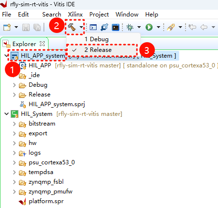
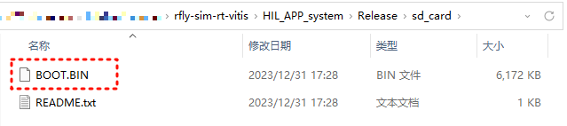

生成仿真模型
1. 预备操作
用MATLAB 2021a打开工程文件，该文件位于PL文件夹中，名为PL.prj。
打开工程中的文件.\Tools\CopyModelCode2VitisPrj.m，该文件用于自动将生成的模型代码拷贝到vitis工程路径中，免去手动繁琐的操作。文件中
vitisPrjPath = 'D:\myWorkSpace\RflySimCourse\socfpga-hil-vitis\';
unzip('code\Model.zip','Tools\Model')
delete .\Tools\Model\code\Model_ert_rtw\ert_main.c .\Tools\Model\code\Model_ert_rtw\buildInfo.mat .\Tools\Model\code\Model_ert_rtw\defines.txt
copyfile('.\Tools\Model',[vitisPrjPath,'HIL_APP\src\TaskINT\Model'])
rmdir Tools\Model s修改
vitisPrjPath的值为用户在导入Vitis工程源码中设置的路径。
2. 生成模型代码
设置安装路径（修改下面命令的路径为Xilinx软件的安装路径）
hdlsetuptoolpath('ToolName','Xilinx Vivado','ToolPath','D:\Xilinx\Vivado\2020.1\bin\vivado.bat'); 依次运行脚本
- PL\Model\H250DegradedParamInit4S.m
- PL\HIL_System\SensorParamInit.m
打开模型文件
- PL\HIL_System\HIL_System.slx
在模型最顶层找到model子系统，在子系统上右键，编译子系统，关键步骤如下所示
第一步：启动模型编译

第二步：选择需要暴露的参数
设置需要可调的参数。注意不要将模型采样时间设置为可调（保持为Inlined），这样会导致错误。

第三步：查看生成的代码
编译后会显示生成的代码，可以在右侧查看到

最后运行脚本
- PL\Tools\CopyModelCode2VitisPrj.m
此时，生成的模型文件已经更新到了Vitis工程中。请用户在HIL_System.slx框架内自定义自己的模型，但不要对模型的输入输出接口做任何更改，也不要修改模型代码生成的相关配置，否则可能导致后续源码编译失败或者工作异常。
3. 更新.xsa文件
如果已经对FPGA内部逻辑进行了修改，那么需要重新编译FPGA逻辑并导出xsa文件，详细可以参考生成FPGA平台文件。在这里需要将生成好的xsa文件在vitis工程中同步，步骤如下所示：

需要稍等片刻才会出现下图的对话框

3. 生成仿真器启动文件
打开Vitis 2020.1，选择在导入Vitis工程源码中导入的工作空间。
Note
第一次导入后，下次打开默认显示上次打开的工作空间。
如下图所示，选中顶层工程HIL_APP_system，再选择Release模式，将开始编译

编译后按照下图路径找到编译出的文件BOOT.BIN。

将图中BOOT.BIN文件复制到仿真器的SD卡中，不要修改文件名称。